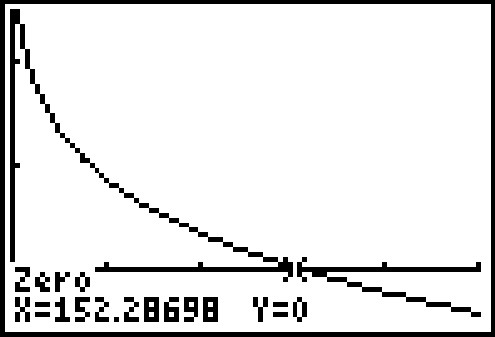
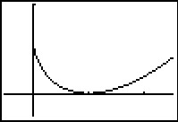
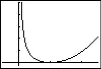

Funções Polinomiais e Racionais
19 Funções Algébricas
Resumo do capítulo
Funções algébricas envolvem radicais, e este capítulo trata da determinação de seu domínio, da resolução de equações radicais elevando ambos os lados a uma potência (e do cuidado de descartar soluções estranhas geradas nesse processo), e do uso das propriedades dos radicais.
Para cada função nos exercícios 1 - 10 abaixo
- Encontre o domínio.
- Estude o sinal.
- Use o GeoGebra para traçar o gráfico e identificar quaisquer assíntotas verticais ou horizontais, “inclinações atípicas” ou cúspides.
- $f(x) = \sqrt{1 - x^2}$
Domínio: $[-1, 1]$
Sem assíntotas
Inclinação atípica em $x = -1$ e $x = 1$
Sem cúspides - $f(x) = \sqrt{x^2-1}$resposta$f(x) = \sqrt{x^2-1}$
Domínio: $(-\infty, -1] \cup [1,\infty)$
Sem assíntotas
Inclinação atípica em $x = -1$ e $x = 1$
Sem cúspides
- $f(x) = x \sqrt{1-x^2}$resposta$f(x) = x\sqrt{1-x^2}$
Domínio: $[-1,1]$
Sem assíntotas
Inclinação atípica em $x = -1$ e $x = 1$
Sem cúspides - $f(x) = x \sqrt{x^2-1}$resposta$f(x) = x\sqrt{x^2-1}$
Domínio: $(-\infty, -1] \cup [1,\infty)$
Sem assíntotas
Inclinação atípica em $x = -1$ e $x = 1$
Sem cúspides
- $f(x) = \sqrt[4]{\dfrac{16x}{x^{2} - 9}}$resposta$f(x) = \sqrt[4]{\dfrac{16x}{x^2 - 9}}$
Domínio: $(-3, 0] \cup (3, \infty)$
Assíntotas verticais: $x = -3$ e $x = 3$
Assíntotas horizontais: $y = 0$
Inclinação atípica em $x = 0$
Sem cúspides - $f(x) = \dfrac{5x}{\sqrt[3]{x^{3} + 8}}$resposta$f(x) = x^{\frac{2}{3}}(x - 7)^{\frac{1}{3}}$
Domínio: $(-\infty, \infty)$
Sem assíntotas verticais ou horizontais*É possível mostrar usando cálculo que $y = x - \frac{7}{3}$ é uma assíntota oblíqua do gráfico.
Inclinação atípica em $x = 7$
Cuspíde em $x = 0$
- $f(x) = x^{\frac{2}{3}}(x - 7)^{\frac{1}{3}}$resposta$f(x) = \dfrac{5x}{\sqrt[3]{x^{3} + 8}}$
Domínio: $(-\infty, -2) \cup (-2, \infty)$
Assíntota vertical $x = -2$
Assíntota horizontal $y = 5$
Sem inclinações atípicas ou cúspides - $f(x) = x^{\frac{3}{2}}(x - 7)^{\frac{1}{3}}$resposta$f(x) = x^{\frac{3}{2}}(x - 7)^{\frac{1}{3}}$
Domínio: $[0, \infty)$
Sem assíntotas
Inclinação atípica em $x = 7$
Sem cúspides
- $f(x) = \sqrt{x(x + 5)(x - 4)}$resposta$f(x) = \sqrt{x(x + 5)(x - 4)}$
Domínio: $[-5, 0] \cup [4, \infty)$
Sem assíntotas
Inclinação atípica em $x = -5, x = 0$ e $x = 4$
Sem cúspides - $f(x) = \sqrt[3]{x^{3} + 3x^{2} - 6x - 8}$
Domínio: $(-\infty, \infty)$
Sem assíntotas verticais ou horizontais*É possível mostrar usando cálculo que $y = x + 1$ é uma assíntota oblíqua do gráfico.
Inclinação atípica em $x = -4, x = -1$ e $x = 2$
Sem cúspides
Nos exercícios 11 - 16, esboce o gráfico de $y=g(x)$ começando pelo gráfico de $y = f(x)$ e usando as transformações apresentadas na Capítulo 7.
- $g(x) = \sqrt[3]{x-1}-2$
- $f(x) = \sqrt[3]{x}$, $g(x) = -2\sqrt[3]{x + 1} + 4$resposta$g(x) = -2\sqrt[3]{x + 1} + 4$
- $f(x) = \sqrt[4]{x}$, $g(x) = \sqrt[4]{x-1}-2$resposta$g(x) = \sqrt[4]{x-1}-2$
- $f(x) = \sqrt[4]{x}$, $g(x) = 3\sqrt[4]{x - 7} - 1$resposta$g(x) = 3\sqrt[4]{x - 7} - 1$
- $f(x) = \sqrt[5]{x}$, $g(x) = \sqrt[5]{x + 2} + 3$resposta$g(x) = \sqrt[5]{x + 2} + 3$
- $g(x) = \sqrt[8]{-x} - 2$
Nos exercícios 17 - 35, resolva a equação ou inequação.
- $x=3$
- $2x+1 = \sqrt{3-3x}$resposta$x = \frac{1}{4}$
- $x + \sqrt{3x+10} = -2$resposta$x=-3$
- $3x+\sqrt{6-9x}=2$resposta$x = -\frac{1}{3}, \; \frac{2}{3}$
- $2x - 1 = \sqrt{x + 3}$resposta$x = \frac{5 + \sqrt{57}}{8}$
- $x^{\frac{3}{2}} = 8$resposta$x = 4$
- $x^{\frac{2}{3}} = 4$resposta$x = \pm 8$
- $\sqrt{x - 2} + \sqrt{x - 5} = 3$resposta$x = 6$
- $\sqrt{2x+1} = 3 + \sqrt{4-x}$resposta$x = 4$
- $5 - (4-2x)^{\frac{2}{3}} = 1$resposta$x=-2, 6$
- $10-\sqrt{x-2} \leq 11$resposta$[2, \infty)$
- $\sqrt[3]{x} \leq x$resposta$[-1, 0] \cup [1, \infty)$
- $2 (x-2)^{-\frac{1}{3}} -\frac{2}{3} x(x-2)^{-\frac{4}{3}} \leq 0$resposta$(-\infty, 2) \cup (2,3]$
- $-\frac{4}{3} (x-2)^{-\frac{4}{3}} + \frac{8}{9} x (x-2)^{-\frac{7}{3}} \geq 0$resposta$(2,6]$
- $2x^{-\frac{1}{3}}(x-3)^{\frac{1}{3}} + x^{\frac{2}{3}} (x-3)^{-\frac{2}{3}} \geq 0$resposta$(-\infty, 0) \cup [2,3) \cup (3, \infty)$
- $\sqrt[3]{x^{3} + 3x^{2} - 6x - 8} > x + 1$resposta$(-\infty, -1)$
- $\frac{1}{3}x^{\frac{3}{4}}(x - 3)^{-\frac{2}{3}} + \frac{3}{4}x^{-\frac{1}{4}}(x - 3)^{\frac{1}{3}} < 0$resposta$\left(0, \frac{27}{13} \right)$
- $x^{-\frac{1}{3}} (x-3)^{-\frac{2}{3}} - x^{-\frac{4}{3}} (x-3)^{-\frac{5}{3}} (x^2-3x+2) \geq 0$resposta$(-\infty, 0) \cup (0,3)$
- $\frac{2}{3}(x + 4)^{\frac{3}{5}}(x - 2)^{-\frac{1}{3}} + \frac{3}{5}(x + 4)^{-\frac{2}{5}}(x - 2)^{\frac{2}{3}} \geq 0$resposta$(-\infty, -4) \cup \left(-4, -\frac{22}{19}\right] \cup (2, \infty)$
- resposta$C(x) = 15x+20\sqrt{100+(30-x)^2}$, $0 \leq x \leq 30$. O GeoGebra fornece o mínimo absoluto em $\approx (18.66, 582.29)$. Isso significa que, para minimizar o custo, aproximadamente 30 quilômetros de cabo devem ser percorridos ao longo da Rota 117 antes de sair da estrada e seguir em direção ao posto avançado. O custo mínimo para passar o cabo é de aproximadamente $\$582.29$.
- O volume $V$ de um cone reto de base circular depende do raio $r$ da base e da altura $h$ e é dado pela fórmula $V = \frac{1}{3} \pi r^2 h$. A área $S$ da superfície também depende de $r$ e $h$ de acordo com a fórmula $S = \pi r \sqrt{r^2+h^2}$. Suponha que um cone deva ter um volume de 100 centímetros cúbicos.resposta
- Use a fórmula do volume para encontrar a altura $h$ em função de $r$.
- Use a fórmula da área de superfície e sua resposta para 37 para encontrar a área de superfície $S$ em função de $r$.
- Use o GeoGebra para encontrar os valores de $r$ e $h$ que minimizam a área de superfície. Qual é a área de superfície mínima? Arredonde suas respostas para duas casas decimais.
- $h(r) = \frac{300}{\pi r^2}$, $r > 0$.
- $S(r) = \pi r \sqrt{r^2+\left(\frac{300}{\pi r^2}\right)^2} = \frac{\sqrt{\pi^2 r^6+90000}}{r}$, $r>0$
- O GeoGebra fornece o mínimo absoluto no ponto $\approx (4.07, 90.23)$. Isso significa que o raio deve ser (aproximadamente) 4.07 centímetros e a altura deve ser 5.76 centímetros para fornecer uma área de superfície mínima de 90.23 centímetros quadrados.
- O Serviço Meteorológico Nacional usa a seguinte fórmula para calcular a sensação térmica: \[ W = 35.74 + 0.6215 \, T_{a} - 35.75\, V^{0.16} + 0.4275 \, T_{a} \, V^{0.16} \] onde $W$ é a sensação térmica em $^{\circ}$F, $T_{a}$ é a temperatura do ar em $^{\circ}$F e $V$ é a velocidade do vento em milhas por hora. Observe que $W$ é definida apenas para temperaturas do ar iguais ou inferiores a $50^{\circ}$F e velocidades do vento acima de $3$ milhas por hora.resposta
- Suponha que a temperatura do ar seja $42^{\circ}$ e a velocidade do vento seja $7$ milhas por hora. Encontre a sensação térmica. Arredonde sua resposta para duas casas decimais.
- Suponha que a temperatura do ar seja $37^{\circ}$F e a sensação térmica seja $30^{\circ}$F. Encontre a velocidade do vento. Arredonde sua resposta para duas casas decimais.
- $W \approx 37.55^{\circ}$F.
- $V \approx 9.84$ milhas por hora.
- Como continuação do exercício 38, suponha que a temperatura do ar seja $28^{\circ}$F.resposta
- $W(V) = 53.142 - 23.78 V^{0.16}$. Como fomos informados no exercício 38 que a sensação térmica só tem efeito para velocidades de vento superiores a 3 milhas por hora, restringimos o domínio a $V > 3$.
- $W(V)=0$ quando $V \approx 152.29$. Isso significa que, de acordo com o modelo, para que a temperatura do vento seja de $0^{\circ}$F, a velocidade do vento precisa ser de $152.29$ milhas por hora.
- O gráfico está abaixo.

- O período de um pêndulo em segundos é dado por \[T = 2\pi \sqrt{\dfrac{L}{g}}\](para pequenos deslocamentos), onde $L$ é o comprimento do pêndulo em metros e $ g = 9,8$ metros por segundo por segundo é a aceleração da gravidade. Meu antigo relógio de pêndulo precisa que $T$ seja igual a $\frac{1}{2}$ segundo e posso ajustar o comprimento do pêndulo por meio de um pequeno mostrador. Qual deve ser o comprimento do pêndulo?resposta$9.8 \left(\dfrac{1}{4\pi}\right)^{2} \approx 0.062$ metros ou $6.2$ centímetros
- O modelo de produção Cobb-Douglas afirma que o valor anual total em dólares da produção $P$ em uma economia é uma função do trabalho $x$ (o número total de horas trabalhadas em um ano) e do capital $y$ (o total valor em dólares de todas as coisas compradas para fazer coisas). Especificamente, $P = ax^{b}y^{1 - b}$. Ao fixar $P$, criamos o que é conhecido como uma `isoquanta' e podemos então resolver $y$ como uma função de $x$. Vamos supor que o modelo de produção Cobb-Douglas para o país de Mapingarilândia seja $P = 1.23x^{0.4}y^{0.6}$.resposta
- Seja $P = 300$ e resolva $y$ em termos de $x$. Se $x = 100$, quanto é $y$?
- Faça um gráfico da isoquanta $300 = 1,23x^{0,4}y^{0,6}$. Que informações um par ordenado $(x, y)$ que faz $P = 300$ fornece a você? Com a ajuda de seus colegas, encontre diversas combinações diferentes de trabalho e capital, todas rendendo $P = 300$. Discuta quaisquer padrões que você possa ver.
- Primeiro reescreva o modelo como $P = 1.23x^{\frac{2}{5}}y^{\frac{3}{5}}$. Então $300 = 1.23x^{\frac{2}{5}}y^{\frac{3}{5}}$ resulta $y = \left( \dfrac{300}{1.23x^{\frac{2}{5}}} \right)^{\frac{5}{3}}$. Se $x = 100$ então $y \approx 441.93687$.
- De acordo com a Teoria da Relatividade Especial de Einstein, a massa observada $m$ de um objeto é uma função de quão rápido o objeto está viajando. Especificamente, \[m(x) = \dfrac{m_{r}}{\sqrt{1 - \dfrac{x^{2}}{c^{2}}}}\] onde $m(0)= m_{r}$ é a massa do objeto em repouso, $x$ é a velocidade do objeto e $c$ é a velocidade da luz.resposta
- Encontre o domínio implícito da função.
- Calcule $m(.1c), \, m(.5c), \, m(.9c)$ e $m(.999c)$.
- Quando $x \rightarrow c^{-}$, o que acontece com $m(x)$?
- Quão lentamente o objeto deve viajar para que a massa observada não seja maior que 100 vezes a sua massa em repouso?
- $[0, c)$
- $~$
$m(.1c) = \dfrac{m_{r}}{\sqrt{.99}} \approx 1.005m_{r}$ $m(.5c) = \dfrac{m_{r}}{\sqrt{.75}} \approx 1.155m_{r}$ $m(.9c) = \dfrac{m_{r}}{\sqrt{.19}} \approx 2.294m_{r}$
$m(.999c) = \dfrac{m_{r}}{\sqrt{.0.001999}} \approx 22.366m_{r}$ - Quando $x \rightarrow c^{-}, \, m(x) \rightarrow \infty$
- Se o objeto não estiver viajando mais rápido que aproximadamente $0.99995$ vezes a velocidade da luz, então sua massa observada não será maior que $100m_{r}$.
- Encontre a inversa de $k(x) = \dfrac{2x}{\sqrt{x^{2} - 1}}$.resposta$k^{-1}(x) = \dfrac{x}{\sqrt{x^{2} - 4}}$
- Suponha que Fritzy, a Raposa, posicionada em um ponto $(x,y)$ no primeiro quadrante, localize Chewbacca, o Coelho, em $(0,0)$. Chewbacca começa a correr ao longo de uma cerca (o eixo $y$ positivo) em direção ao seu viveiro. Fritzy, é claro, o persegue e ajusta constantemente sua direção para estar sempre correndo diretamente em direção a Chewbacca. Se a velocidade de Chewbacca for $v_{\text{$1$}}$ e a velocidade de Fritzy for $v_{\text{$2$}}$, o caminho que Fritzy seguirá para interceptar Chewbacca, supondo que $v_{\text {$2$}}$ é diretamente proporcional a $v_{\text{$1$}}$, mas não igual, é modelado porresposta
\[ y = \dfrac{1}{2} \left(\dfrac{x^{1+ v_{1}/v_{2}}}{1+v_{\text{$1$}}/v_{\text{$2$}}}- \dfrac{x^{1-v_{\text{$1$}}/v_{\text{$2$}}}}{1-v_{\text{$1$}}/v_{\text{$2$}}}\right) + \dfrac{v_{\text{$1$}} v_{\text{$2$}}}{v_{\text{$2$}}^2-v_{\text{$1$}}^2} \]
- Determine o caminho que Fritzy seguirá se correr exatamente duas vezes mais rápido que Chewbacca, isto é , se $v_{\text{$2$}} = 2v_{\text{$1$}}$. Use o GeoGebra para representar graficamente esse caminho para $x \geq 0$. Qual é o significado da interseção com o eixo $y$ do gráfico?
- Determine o caminho que Fritzy seguirá se Chewbacca correr exatamente duas vezes mais rápido que ele; isto é, $v_{\text{$1$}} = 2v_{\text{$2$}}$. Use o GeoGebra para representar graficamente esse caminho para $x > 0$. Descreva o comportamento de $y$ quando $x \rightarrow 0^{+}$ e interprete isso fisicamente.
- Com a ajuda de seus colegas, generalize as partes (a) e (b) para dois casos: $v_{\text{$2$}} > v_{\text{$1$}}$ e $v_{\text{$2$}} < v_{\text{$1$}}$. O que acontece se $v_{\text{$1$}} = v_{\text{$2$}}$?.
- $y = \frac{1}{3}x^{3/2} - \sqrt{x} + \frac{2}{3}$. O ponto $\left(0,\frac{2}{3}\right)$ é quando o caminho de Fritzy cruza o caminho de Chewbacca - em outras palavras, onde Fritzy pega Chewbacca.
- $y = \frac{1}{6}x^3+\frac{1}{2x} - \frac{2}{3}$. Quando $x \rightarrow 0^{+}$, $y \rightarrow \infty$ o que significa, neste caso, que a busca de Fritzy nunca termina; ele nunca pega Chewbacca. Isso faz sentido, já que Chewbacca tem uma vantagem inicial e está correndo mais rápido que Fritzy.


$y = \frac{1}{3}x^{3/2} - \sqrt{x} + \frac{2}{3}$
$y = \frac{1}{6}x^3+\frac{1}{2x} - \frac{2}{3}$
- Mostre que $\left(x^{\frac{3}{2}}\right)^{\frac{2}{3}} = x$ para todo $x \geq 0$.
- Com a ajuda de seus colegas, generalize o exercício 47 para mostrar que $\sqrt[n]{c}$ é um número irracional para quaisquer números naturais $c \geq 2$ e $n \geq 2$, desde que $c \neq p^{n}$ para algum número natural $p$.